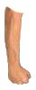
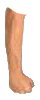
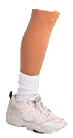
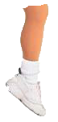
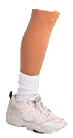
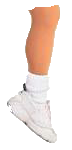

Here we go!
 

 



Welcome to Simmons Says! This is an interactive game similar to Simon Says but featuring Richard Simmons aerobics moves. Simmons will move his arms or legs in an incremented sequence with each turn, your job is to follow the sequence by clicking on the correct limb in the correct order. You will have to wait for the movement to finish before clicking on the next body part so stay patient(we wouldn't want to overwhelm him). Simmons head movements are there for feedback and not part of the sequence. Are you Ready to play?
Start Game!
This document is for educational purposes only. The code has been commented to help you learn. View source or visit https://github.com/kurtpetrek/simmons-says to see how a game like this works.